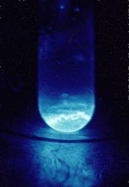
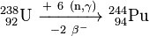
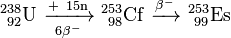
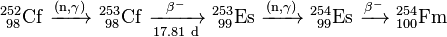
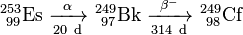
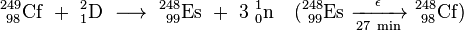
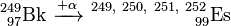
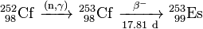
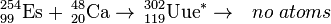

Einsteinium
|  | |||||||||||||||||||||||||||||||||||||||||||||||||||||||||||||||||||||||||||||||||||||||||||||||||||||||||||||||||||||||||||||||||||||||||||||||||||||||||||||||||||||||||||||||||||||||||||||||||||||||||||||||||||||||||||||||||||||
| General properties | |||||||||||||||||||||||||||||||||||||||||||||||||||||||||||||||||||||||||||||||||||||||||||||||||||||||||||||||||||||||||||||||||||||||||||||||||||||||||||||||||||||||||||||||||||||||||||||||||||||||||||||||||||||||||||||||||||||
|---|---|---|---|---|---|---|---|---|---|---|---|---|---|---|---|---|---|---|---|---|---|---|---|---|---|---|---|---|---|---|---|---|---|---|---|---|---|---|---|---|---|---|---|---|---|---|---|---|---|---|---|---|---|---|---|---|---|---|---|---|---|---|---|---|---|---|---|---|---|---|---|---|---|---|---|---|---|---|---|---|---|---|---|---|---|---|---|---|---|---|---|---|---|---|---|---|---|---|---|---|---|---|---|---|---|---|---|---|---|---|---|---|---|---|---|---|---|---|---|---|---|---|---|---|---|---|---|---|---|---|---|---|---|---|---|---|---|---|---|---|---|---|---|---|---|---|---|---|---|---|---|---|---|---|---|---|---|---|---|---|---|---|---|---|---|---|---|---|---|---|---|---|---|---|---|---|---|---|---|---|---|---|---|---|---|---|---|---|---|---|---|---|---|---|---|---|---|---|---|---|---|---|---|---|---|---|---|---|---|---|---|---|---|---|---|---|---|---|---|---|---|---|---|---|---|---|---|---|---|
| Name, symbol | einsteinium, Es | ||||||||||||||||||||||||||||||||||||||||||||||||||||||||||||||||||||||||||||||||||||||||||||||||||||||||||||||||||||||||||||||||||||||||||||||||||||||||||||||||||||||||||||||||||||||||||||||||||||||||||||||||||||||||||||||||||||
| Pronunciation | /aɪnˈstaɪniəm/ eyen-STY-nee-əm |
||||||||||||||||||||||||||||||||||||||||||||||||||||||||||||||||||||||||||||||||||||||||||||||||||||||||||||||||||||||||||||||||||||||||||||||||||||||||||||||||||||||||||||||||||||||||||||||||||||||||||||||||||||||||||||||||||||
| Appearance | silver-colored | ||||||||||||||||||||||||||||||||||||||||||||||||||||||||||||||||||||||||||||||||||||||||||||||||||||||||||||||||||||||||||||||||||||||||||||||||||||||||||||||||||||||||||||||||||||||||||||||||||||||||||||||||||||||||||||||||||||
| Einsteinium in the periodic table | |||||||||||||||||||||||||||||||||||||||||||||||||||||||||||||||||||||||||||||||||||||||||||||||||||||||||||||||||||||||||||||||||||||||||||||||||||||||||||||||||||||||||||||||||||||||||||||||||||||||||||||||||||||||||||||||||||||
|
|||||||||||||||||||||||||||||||||||||||||||||||||||||||||||||||||||||||||||||||||||||||||||||||||||||||||||||||||||||||||||||||||||||||||||||||||||||||||||||||||||||||||||||||||||||||||||||||||||||||||||||||||||||||||||||||||||||
| Atomic number | 99 | ||||||||||||||||||||||||||||||||||||||||||||||||||||||||||||||||||||||||||||||||||||||||||||||||||||||||||||||||||||||||||||||||||||||||||||||||||||||||||||||||||||||||||||||||||||||||||||||||||||||||||||||||||||||||||||||||||||
| Standard atomic weight | (252) | ||||||||||||||||||||||||||||||||||||||||||||||||||||||||||||||||||||||||||||||||||||||||||||||||||||||||||||||||||||||||||||||||||||||||||||||||||||||||||||||||||||||||||||||||||||||||||||||||||||||||||||||||||||||||||||||||||||
| Element category | actinide | ||||||||||||||||||||||||||||||||||||||||||||||||||||||||||||||||||||||||||||||||||||||||||||||||||||||||||||||||||||||||||||||||||||||||||||||||||||||||||||||||||||||||||||||||||||||||||||||||||||||||||||||||||||||||||||||||||||
| Group, block | group n/a, f-block | ||||||||||||||||||||||||||||||||||||||||||||||||||||||||||||||||||||||||||||||||||||||||||||||||||||||||||||||||||||||||||||||||||||||||||||||||||||||||||||||||||||||||||||||||||||||||||||||||||||||||||||||||||||||||||||||||||||
| Period | period 7 | ||||||||||||||||||||||||||||||||||||||||||||||||||||||||||||||||||||||||||||||||||||||||||||||||||||||||||||||||||||||||||||||||||||||||||||||||||||||||||||||||||||||||||||||||||||||||||||||||||||||||||||||||||||||||||||||||||||
| Electron configuration | [Rn] 5f11 7s2 | ||||||||||||||||||||||||||||||||||||||||||||||||||||||||||||||||||||||||||||||||||||||||||||||||||||||||||||||||||||||||||||||||||||||||||||||||||||||||||||||||||||||||||||||||||||||||||||||||||||||||||||||||||||||||||||||||||||
| per shell | 2, 8, 18, 32, 29, 8, 2 | ||||||||||||||||||||||||||||||||||||||||||||||||||||||||||||||||||||||||||||||||||||||||||||||||||||||||||||||||||||||||||||||||||||||||||||||||||||||||||||||||||||||||||||||||||||||||||||||||||||||||||||||||||||||||||||||||||||
| Physical properties | |||||||||||||||||||||||||||||||||||||||||||||||||||||||||||||||||||||||||||||||||||||||||||||||||||||||||||||||||||||||||||||||||||||||||||||||||||||||||||||||||||||||||||||||||||||||||||||||||||||||||||||||||||||||||||||||||||||
| Phase | solid | ||||||||||||||||||||||||||||||||||||||||||||||||||||||||||||||||||||||||||||||||||||||||||||||||||||||||||||||||||||||||||||||||||||||||||||||||||||||||||||||||||||||||||||||||||||||||||||||||||||||||||||||||||||||||||||||||||||
| Melting point | 1133 K (860 °C, 1580 °F) | ||||||||||||||||||||||||||||||||||||||||||||||||||||||||||||||||||||||||||||||||||||||||||||||||||||||||||||||||||||||||||||||||||||||||||||||||||||||||||||||||||||||||||||||||||||||||||||||||||||||||||||||||||||||||||||||||||||
| Boiling point | 1269 K (996 °C, 1825 °F) (estimated) | ||||||||||||||||||||||||||||||||||||||||||||||||||||||||||||||||||||||||||||||||||||||||||||||||||||||||||||||||||||||||||||||||||||||||||||||||||||||||||||||||||||||||||||||||||||||||||||||||||||||||||||||||||||||||||||||||||||
| Density near r.t. | 8.84 g·cm−3 | ||||||||||||||||||||||||||||||||||||||||||||||||||||||||||||||||||||||||||||||||||||||||||||||||||||||||||||||||||||||||||||||||||||||||||||||||||||||||||||||||||||||||||||||||||||||||||||||||||||||||||||||||||||||||||||||||||||
| Atomic properties | |||||||||||||||||||||||||||||||||||||||||||||||||||||||||||||||||||||||||||||||||||||||||||||||||||||||||||||||||||||||||||||||||||||||||||||||||||||||||||||||||||||||||||||||||||||||||||||||||||||||||||||||||||||||||||||||||||||
| Oxidation states | 2, 3, 4 | ||||||||||||||||||||||||||||||||||||||||||||||||||||||||||||||||||||||||||||||||||||||||||||||||||||||||||||||||||||||||||||||||||||||||||||||||||||||||||||||||||||||||||||||||||||||||||||||||||||||||||||||||||||||||||||||||||||
| Electronegativity | Pauling scale: 1.3 | ||||||||||||||||||||||||||||||||||||||||||||||||||||||||||||||||||||||||||||||||||||||||||||||||||||||||||||||||||||||||||||||||||||||||||||||||||||||||||||||||||||||||||||||||||||||||||||||||||||||||||||||||||||||||||||||||||||
| Ionization energies | 1st: 619 kJ·mol−1 | ||||||||||||||||||||||||||||||||||||||||||||||||||||||||||||||||||||||||||||||||||||||||||||||||||||||||||||||||||||||||||||||||||||||||||||||||||||||||||||||||||||||||||||||||||||||||||||||||||||||||||||||||||||||||||||||||||||
| Miscellanea | |||||||||||||||||||||||||||||||||||||||||||||||||||||||||||||||||||||||||||||||||||||||||||||||||||||||||||||||||||||||||||||||||||||||||||||||||||||||||||||||||||||||||||||||||||||||||||||||||||||||||||||||||||||||||||||||||||||
| Crystal structure | face-centered cubic (fcc)
 |
||||||||||||||||||||||||||||||||||||||||||||||||||||||||||||||||||||||||||||||||||||||||||||||||||||||||||||||||||||||||||||||||||||||||||||||||||||||||||||||||||||||||||||||||||||||||||||||||||||||||||||||||||||||||||||||||||||
| Magnetic ordering | paramagnetic | ||||||||||||||||||||||||||||||||||||||||||||||||||||||||||||||||||||||||||||||||||||||||||||||||||||||||||||||||||||||||||||||||||||||||||||||||||||||||||||||||||||||||||||||||||||||||||||||||||||||||||||||||||||||||||||||||||||
| CAS Registry Number | 7429-92-7 | ||||||||||||||||||||||||||||||||||||||||||||||||||||||||||||||||||||||||||||||||||||||||||||||||||||||||||||||||||||||||||||||||||||||||||||||||||||||||||||||||||||||||||||||||||||||||||||||||||||||||||||||||||||||||||||||||||||
| History | |||||||||||||||||||||||||||||||||||||||||||||||||||||||||||||||||||||||||||||||||||||||||||||||||||||||||||||||||||||||||||||||||||||||||||||||||||||||||||||||||||||||||||||||||||||||||||||||||||||||||||||||||||||||||||||||||||||
| Naming | after Albert Einstein | ||||||||||||||||||||||||||||||||||||||||||||||||||||||||||||||||||||||||||||||||||||||||||||||||||||||||||||||||||||||||||||||||||||||||||||||||||||||||||||||||||||||||||||||||||||||||||||||||||||||||||||||||||||||||||||||||||||
| Discovery | Lawrence Berkeley National Laboratory (1952) | ||||||||||||||||||||||||||||||||||||||||||||||||||||||||||||||||||||||||||||||||||||||||||||||||||||||||||||||||||||||||||||||||||||||||||||||||||||||||||||||||||||||||||||||||||||||||||||||||||||||||||||||||||||||||||||||||||||
| Most stable isotopes | |||||||||||||||||||||||||||||||||||||||||||||||||||||||||||||||||||||||||||||||||||||||||||||||||||||||||||||||||||||||||||||||||||||||||||||||||||||||||||||||||||||||||||||||||||||||||||||||||||||||||||||||||||||||||||||||||||||
|
|||||||||||||||||||||||||||||||||||||||||||||||||||||||||||||||||||||||||||||||||||||||||||||||||||||||||||||||||||||||||||||||||||||||||||||||||||||||||||||||||||||||||||||||||||||||||||||||||||||||||||||||||||||||||||||||||||||
{kind=link}
Einsteinium is a synthetic element with symbol Es and atomic number 99. It is the seventh transuranic element, and an actinide.
Einsteinium was discovered as a component of the debris of the first hydrogen bomb explosion in 1952, and named after Albert Einstein. Its most common isotope einsteinium-253 (half life 20.47 days) is produced artificially from decay of californium-253 in a few dedicated high-power nuclear reactors with a total yield on the order of one milligram per year. The reactor synthesis is followed by a complex procedure of separating einsteinium-253 from other actinides and products of their decay. Other isotopes are synthesized in various laboratories, but at much smaller amounts, by bombarding heavy actinide elements with light ions. Owing to the small amounts of produced einsteinium and the short half-life of its most easily produced isotope, there are currently almost no practical applications for it outside of basic scientific research. In particular, einsteinium was used to synthesize, for the first time, 17 atoms of the new element mendelevium in 1955.
Einsteinium is a soft, silvery, paramagnetic metal. Its chemistry is typical of the late actinides, with a preponderance of the +3 oxidation state; the +2 oxidation state is also accessible, especially in solids. The high radioactivity of einsteinium-253 produces a visible glow and rapidly damages its crystalline metal lattice, with released heat of about 1000 watts per gram. Difficulty in studying its properties is due to einsteinium-253's conversion to berkelium and then californium at a rate of about 3% per day. The isotope of einsteinium with the longest half life, einsteinium-252 (half life 471.7 days) would be more suitable for investigation of physical properties, but it has proven far more difficult to produce and is available only in minute quantities, and not in bulk.[1] Einsteinium is the element with the highest atomic number which has been observed in macroscopic quantities in its pure form, and this was the common short-lived isotope einsteinium-253.[2]
Like all synthetic transuranic elements, isotopes of einsteinium are extremely radioactive and are considered highly dangerous to health on ingestion.[3]
Contents
[hide]History[edit]
{kind=link}
{kind=link}
{kind=link}
Einsteinium was first identified in December 1952 by Albert Ghiorso and co-workers at the University of California, Berkeley in collaboration with the Argonne and Los Alamos National Laboratories, in the fallout from the Ivy Mike nuclear test. The test was carried out on November 1, 1952 at Enewetak Atoll in the Pacific Ocean and was the first successful test of a hydrogen bomb.[4] Initial examination of the debris from the explosion had shown the production of a new isotope of plutonium, 244
94Pu, which could only have formed by the absorption of six neutrons by a uranium-238 nucleus followed by two beta decays.
- 
At the time, the multiple neutron absorption was thought to be an extremely rare process, but the identification of 244
94Pu indicated that still more neutrons could have been captured by the uranium nuclei, thereby producing new elements heavier than californium.[4]
Ghiorso and co-workers analyzed filter papers which had been flown through the explosion cloud on airplanes (the same sampling technique that had been used to discover 244
94Pu).[5] Larger amounts of radioactive material were later isolated from coral debris of the atoll, which were delivered to the U.S.[4] The separation of suspected new elements was carried out in the presence of a citric acid/ammonium buffer solution in a weakly acidic medium (pH ≈ 3.5), using ion exchange at elevated temperatures; fewer than 200 atoms of einsteinium were recovered in the end.[6] Nevertheless, element 99 (einsteinium), namely its 253Es isotope, could be detected via its characteristic high-energy alpha decay at 6.6 MeV.[4] It was produced by the capture of 15 neutrons by uranium-238 nuclei followed by seven beta-decays, and had a half-life of 20.5 days. Such multiple neutron absorption was made possible by the high neutron flux density during the detonation, so that newly generated heavy isotopes had plenty of available neutrons to absorb before they could disintegrate into lighter elements. Neutron capture initially raised the mass number without changing the atomic number of the nuclide, and the concomitant beta-decays resulted in a gradual increase in the atomic number:[4]
- 
Some 238U atoms, however, could absorb another two neutrons (for a total of 17), resulting in 255Es, as well as in the 255Fm isotope of another new element, fermium.[7] The discovery of the new elements and the associated new data on multiple neutron capture were initially kept secret on the orders of the U.S. military until 1955 due to Cold War tensions and competition with Soviet Union in nuclear technologies.[4][8][9] However, the rapid capture of so many neutrons would provide needed direct experimental confirmation of the so-called r-process multiple neutron absorption needed to explain the cosmic nucleosynthesis (production) of certain heavy chemical elements (heavier than nickel) in supernova explosions, before beta decay. Such a process is needed to explain the existence of many stable elements in the universe.[10]
Meanwhile, isotopes of element 99 (as well as of new element 100, fermium) were produced in the Berkeley and Argonne laboratories, in a nuclear reaction between nitrogen-14 and uranium-238,[11] and later by intense neutron irradiation of plutonium or californium:
- 
These results were published in several articles in 1954 with the disclaimer that these were not the first studies that had been carried out on the elements.[12][13][14][15][16] The Berkeley team also reported some results on the chemical properties of einsteinium and fermium.[17][18] The Ivy Mike results were declassified and published in 1955.[8]
In their discovery of the elements 99 and 100, the American teams had competed with a group at the Nobel Institute for Physics, Stockholm, Sweden. In late 1953 – early 1954, the Swedish group succeeded in the synthesis of light isotopes of element 100, in particular 250Fm, by bombarding uranium with oxygen nuclei. These results were also published in 1954.[19] Nevertheless, the priority of the Berkeley team was generally recognized, as its publications preceded the Swedish article, and they were based on the previously undisclosed results of the 1952 thermonuclear explosion; thus the Berkeley team was given the privilege to name the new elements. As the effort which had led to the design of Ivy Mike was codenamed Project PANDA,[20] element 99 had been jokingly nicknamed "Pandamonium"[21] but the official names suggested by the Berkeley group derived from two prominent scientists, Albert Einstein and Enrico Fermi: "We suggest for the name for the element with the atomic number 99, einsteinium (symbol E) after Albert Einstein and for the name for the element with atomic number 100, fermium (symbol Fm), after Enrico Fermi."[8] Both Einstein and Fermi died before the names were announced.[22] The discovery of these new elements was announced by Albert Ghiorso at the first Geneva Atomic Conference held on 8–20 August 1955.[4] The symbol for einsteinium was first given as "E" and later changed to "Es" by IUPAC.[23][24]
Characteristics[edit]
Physical[edit]
{kind=link}
Einsteinium is a synthetic, silvery-white, radioactive metal. In the periodic table, it is located to the right of the actinide californium, to the left of the actinide fermium and below the lanthanide holmium with which it shares many similarities in physical and chemical properties. Its density of 8.84 g/cm3 is lower than that of californium (15.1 g/cm3) and is nearly the same as that of holmium (8.79 g/cm3), despite atomic einsteinium being much heavier than holmium. The melting point of einsteinium (860 °C) is also relatively low – below californium (900 °C), fermium (1527 °C) and holmium (1461 °C).[3][26] Einsteinium is a soft metal, with the bulk modulus of only 15 GPa, which value is one of the lowest among non-alkali metals.[27]
Contrary to the lighter actinides californium, berkelium, curium and americium which crystallize in a double hexagonal structure at ambient conditions, einsteinium is believed to have a face-centered cubic (fcc) symmetry with the space group Fm3m and the lattice constant a = 575 pm. However, there is a report of room-temperature hexagonal einsteinium metal with a = 398 pm and c = 650 pm, which converted to the fcc phase upon heating to 300 °C.[28]
The self-damage induced by the radioactivity of einsteinium is so strong that it rapidly destroys the crystal lattice,[29] and the energy release during this process, 1000 watts per gram of 253Es, induces a visible glow.[2] These processes may contribute to the relatively low density and melting point of einsteinium.[30] Further, owing to the small size of the available samples, the melting point of einsteinium was often deduced by observing the sample being heated inside an electron microscope.[31] Thus the surface effects in small samples could reduce the melting point value.
The metal is divalent and has a noticeably high volatility.[32] In order to reduce the self-radiation damage, most measurements of solid einsteinium and its compounds are performed right after thermal annealing.[33] Also, some compounds are studied under the atmosphere of the reductant gas, for example H2O+HCl for EsOCl so that the sample is partly regrown during its decomposition.[34]
Apart from the self-destruction of solid einsteinium and its compounds, other intrinsic difficulties in studying this element include scarcity – the most common 253Es isotope is available only once or twice a year in sub-milligram amounts – and self-contamination due to rapid conversion of einsteinium to berkelium and then to californium at a rate of about 3.3% per day:[35][36][37]
- 
Thus, most einsteinium samples are contaminated, and their intrinsic properties are often deduced by extrapolating back experimental data accumulated over time. Other experimental techniques to circumvent the contamination problem include selective optical excitation of einsteinium ions by a tunable laser, such as in studying its luminescence properties.[38]
Magnetic properties have been studied for einsteinium metal, its oxide and fluoride. All three materials showed Curie–Weiss paramagnetic behavior from liquid helium to room temperature. The effective magnetic moments were deduced as 10.4 ± 0.3 µB for Es2O3 and 11.4 ± 0.3 µB for the EsF3, which are the highest values among actinides, and the corresponding Curie temperatures are 53 and 37 K.[39][40]
Chemical[edit]
Like all actinides, einsteinium is rather reactive. Its trivalent oxidation state is most stable in solids and aqueous solution where it induced pale pink color.[41] The existence of divalent einsteinium is firmly established, especially in solid phase; such +2 state is not observed in many other actinides, including protactinium, uranium, neptunium, plutonium, curium and berkelium. Einsteinium(II) compounds can be obtained, for example, by reducing einsteinium(III) with samarium(II) chloride.[42] The oxidation state +4 was postulated from vapor studies and is yet uncertain.[43]
Isotopes[edit]
Nineteen nuclides and three nuclear isomers are known for einsteinium with atomic weights ranging from 240 to 258. All are radioactive and the most stable nuclide, 252Es, has a half-life of 471.7 days.[44] Next most stable isotopes are 254Es (half-life 275.7 days),[45] 255Es (39.8 days) and 253Es (20.47 days). All of the remaining isotopes have half-lives shorter than 40 hours, and most of them decay within less than 30 minutes. Of the three nuclear isomers, the most stable is 254mEs with half-life of 39.3 hours.[46]
Nuclear fission[edit]
Einsteinium has a high rate of nuclear fission that results in a low critical mass for a sustained nuclear chain reaction. This mass is 9.89 kilograms for a bare sphere of 254Es isotope, and can be lowered to 2.9 or even 2.26 kilograms, respectively, by adding a 30 centimeter thick steel or water reflector. However, even this small critical mass greatly exceeds the total amount of einsteinium isolated thus far, especially of the rare 254Es isotope.[47]
Natural occurrence[edit]
Because of the short half-life of all isotopes of einsteinium, any primordial einsteinium, that is einsteinium that could possibly be present on the Earth during its formation, has decayed by now. Synthesis of einsteinium from naturally occurring actinides uranium and thorium in the Earth crust requires multiple neutron capture, which is an extremely unlikely event. Therefore, most einsteinium is produced on Earth in scientific laboratories, high-power nuclear reactors, or in nuclear weapons tests, and is present only within a few years from the time of the synthesis.[6] Einsteinium and fermium did occur naturally in the natural nuclear fission reactor at Oklo, but no longer do so.[48] Einsteinium was observed in Przybylski's Star in 2008.[49]
Synthesis and extraction[edit]
{kind=link}
Einsteinium is produced in minute quantities by bombarding lighter actinides with neutrons in dedicated high-flux nuclear reactors. The world's major irradiation sources are the 85-megawatt High Flux Isotope Reactor (HFIR) at the Oak Ridge National Laboratory in Tennessee, U.S.,[51] and the SM-2 loop reactor at the Research Institute of Atomic Reactors (NIIAR) in Dimitrovgrad, Russia,[52] which are both dedicated to the production of transcurium (Z > 96) elements. These facilities have similar power and flux levels, and are expected to have comparable production capacities for transcurium elements,[53] although the quantities produced at NIIAR are not widely reported. In a "typical processing campaign" at Oak Ridge, tens of grams of curium are irradiated to produce decigram quantities of californium, milligram quantities of berkelium (249Bk) and einsteinium and picogram quantities of fermium.[54][55]
The first microscopic sample of 253Es sample weighing about 10 nanograms was prepared in 1961 at HFIR. A special magnetic balance was designed to estimate its weight.[3][56] Larger batches were produced later starting from several kilograms of plutonium with the einsteinium yields (mostly 253Es) of 0.48 milligrams in 1967–1970, 3.2 milligrams in 1971–1973, followed by steady production of about 3 milligrams per year between 1974 and 1978.[57] These quantities however refer to the integral amount in the target right after irradiation. Subsequent separation procedures reduced the amount of isotopically pure einsteinium roughly tenfold.[53]
Laboratory synthesis[edit]
Heavy neutron irradiation of plutonium results in four major isotopes of einsteinium: 253Es (α-emitter with half-life of 20.03 days and with a spontaneous fission half-life of 7×105 years); 254mEs (β-emitter with half-life of 38.5 hours), 254Es (α-emitter with half-life of about 276 days) and 255Es (β-emitter with half-life of 24 days).[58] An alternative route involves bombardment of uranium-238 with high-intensity nitrogen or oxygen ion beams.[59]
Einsteinium-247 (half-life 4.55 minutes) was produced by irradiating americium-241 with carbon or uranium-238 with nitrogen ions.[60] The latter reaction was first realized in 1967 in Dubna, Russia, and the involved scientists were awarded the Lenin Komsomol Prize.[61]
The isotope 248Es was produced by irradiating 249Cf with deuterium ions. It mainly decays by emission of electrons to 248Cf with a half-life of 25 (±5) minutes, but also releases α-particles of 6.87 MeV energy, with the ratio of electrons to α-particles of about 400.[62]
- 
The heavier isotopes 249Es, 250Es, 251Es and 252Es were obtained by bombarding 249Bk with α-particles. One to four neutrons are liberated in this process making possible the formation of four different isotopes in one reaction.[63]
- 
Einsteinium-253 was produced by irradiating a 0.1–0.2 milligram 252Cf target with a thermal neutron flux of (2–5)×1014 neutrons·cm−2·s−1 for 500–900 hours:[64]
- 
Synthesis in nuclear explosions[edit]
{kind=link}
The analysis of the debris at the 10-megaton Ivy Mike nuclear test was a part of long-term project. One of the goals of which was studying the efficiency of production of transuranium elements in high-power nuclear explosions. The motivation for these experiments was that synthesis of such elements from uranium requires multiple neutron capture. The probability of such events increases with the neutron flux, and nuclear explosions are the most powerful man-made neutron sources, providing densities of the order 1023 neutrons/cm2 within a microsecond, or about 1029 neutrons/(cm2·s). In comparison, the flux of the HFIR reactor is 5×1015 neutrons/(cm2·s). A dedicated laboratory was set up right at Enewetak Atoll for preliminary analysis of debris, as some isotopes could have decayed by the time the debris samples reached the mainland U.S. The laboratory was receiving samples for analysis as soon as possible, from airplanes equipped with paper filters which flew over the atoll after the tests. Whereas it was hoped to discover new chemical elements heavier than fermium, none of these were found even after a series of megaton explosions conducted between 1954 and 1956 at the atoll.[5]
The atmospheric results were supplemented by the underground test data accumulated in the 1960s at the Nevada Test Site, as it was hoped that powerful explosions conducted in confined space might result in improved yields and heavier isotopes. Apart from traditional uranium charges, combinations of uranium with americium and thorium have been tried, as well as a mixed plutonium-neptunium charge, but they were less successful in terms of yield and was attributed to stronger losses of heavy isotopes due to enhanced fission rates in heavy-element charges. Product isolation was problematic as the explosions were spreading debris through melting and vaporizing the surrounding rocks at depths of 300–600 meters. Drilling to such depths to extract the products was both slow and inefficient in terms of collected volumes.[5][65]
Among the nine underground tests that were carried between 1962 and 1969,[66][67] the last one was the most powerful and had the highest yield of transuranium elements. Milligrams of einsteinium that would normally take a year of irradiation in a high-power reactor, were produced within a microsecond.[65] However, the major practical problem of the entire proposal was collecting the radioactive debris dispersed by the powerful blast. Aircraft filters adsorbed only about 4×10−14 of the total amount, and collection of tons of corals at Enewetak Atoll increased this fraction by only two orders of magnitude. Extraction of about 500 kilograms of underground rocks 60 days after the Hutch explosion recovered only about 1×10−7 of the total charge. The amount of transuranium elements in this 500-kg batch was only 30 times higher than in a 0.4 kg rock picked up 7 days after the test which demonstrated the highly non-linear dependence of the transuranium elements yield on the amount of retrieved radioactive rock.[68] Shafts were drilled at the site before the test in order to accelerate sample collection after explosion, so that explosion would expel radioactive material from the epicenter through the shafts and to collecting volumes near the surface. This method was tried in two tests and instantly provided hundreds kilograms of material, but with actinide concentration 3 times lower than in samples obtained after drilling. Whereas such method could have been efficient in scientific studies of short-lived isotopes, it could not improve the overall collection efficiency of the produced actinides.[69]
Although no new elements (apart from einsteinium and fermium) could be detected in the nuclear test debris, and the total yields of transuranium elements were disappointingly low, these tests did provide significantly higher amounts of rare heavy isotopes than previously available in laboratories.[70]
Separation[edit]
{kind=link}
Separation procedure of einsteinium depends on the synthesis method. In the case of light-ion bombardment inside a cyclotron, the heavy ion target is attached to a thin foil, and the generated einsteinium is simply washed off the foil after the irradiation. However, the produced amounts in such experiments are relatively low.[71] The yields are much higher for reactor irradiation, but there, the product is a mixture of various actinide isotopes, as well as lanthanides produced in the nuclear fission decays. In this case, isolation of einsteinium is a tedious procedure which involves several repeating steps of cation exchange, at elevated temperature and pressure, and chromatography. Separation from berkelium is important, because the most common einsteinium isotope produced in nuclear reactors, 253Es, decays with a half-life of only 20 days to 249Bk, which is fast on the timescale of most experiments. Such separation relies on the fact that berkelium easily oxidizes to the solid +4 state and precipitates, whereas other actinides, including einsteinium, remain in their +3 state in solutions.[72]
Separation of trivalent actinides from lanthanide fission products can be done by a cation-exchange resin column using a 90% water/10% ethanol solution saturated with hydrochloric acid (HCl) as eluant. It is usually followed by anion-exchange chromatography using 6 molar HCl as eluant. A cation-exchange resin column (Dowex-50 exchange column) treated with ammonium salts is then used to separate fractions containing elements 99, 100 and 101. These elements can be then identified simply based on their elution position/time, using α-hydroxyisobutyrate solution (α-HIB), for example, as eluant.[73]
Separation of the 3+ actinides can also be achieved by solvent extraction chromatography, using bis-(2-ethylhexyl) phosphoric acid (abbreviated as HDEHP) as the stationary organic phase, and nitric acid as the mobile aqueous phase. The actinide elution sequence is reversed from that of the cation-exchange resin column. The einsteinium separated by this method has the advantage to be free of organic complexing agent, as compared to the separation using a resin column.[73]
Preparation of the metal[edit]
Einsteinium is highly reactive and therefore strong reducing agents are required to obtain the pure metal from its compounds.[74] This can be achieved by reduction of einsteinium(III) fluoride with metallic lithium:
- EsF3 + 3 Li → Es + 3 LiF
However, owing to its low melting point and high rate of self-radiation damage, einsteinium has high vapor pressure, which is higher than that of lithium fluoride. This makes this reduction reaction rather inefficient. It was tried in the early preparation attempts and quickly abandoned in favor of reduction of einsteinium(III) oxide with lanthanum metal:[28][30][75]
- Es2O3 + 2 La → 2 Es + La2O3
Chemical compounds[edit]
| [show]Compound | Color | Symmetry | Space group | No | Pearson symbol | a (pm) | b (pm) | c (pm) |
|---|
Oxides[edit]
Einsteinium(III) oxide (Es2O3) was obtained by burning einsteinium(III) nitrate. It forms colorless cubic crystals, which were first characterized from microgram samples sized about 30 nanometers.[29][36] Two other phases, monoclinic and hexagonal, are known for this oxide. The formation of a certain Es2O3 phase depends on the preparation technique and sample history, and there is no clear phase diagram. Interconversions between the three phases can occur spontaneously, as a result of self-irradiation or self-heating.[84] The hexagonal phase is isotypic with lanthanum(III) oxide where the Es3+ ion is surrounded by a 6-coordinated group of O2− ions.[76][81]
Halides[edit]
{kind=link}
Einsteinium halides are known for the oxidation states +2 and +3.[83][85] The most stable state is +3 for all halides from fluoride to iodide.
Einsteinium(III) fluoride (EsF3) can be precipitated from einsteinium(III) chloride solutions upon reaction with fluoride ions. An alternative preparation procedure is to exposure einsteinium(III) oxide to chlorine trifluoride (ClF3) or F2 gas at a pressure of 1–2 atmospheres and a temperature between 300 and 400 °C. The EsF3 crystal structure is hexagonal, as in californium(III) fluoride (CfF3) where the Es3+ ions are 8-fold coordinated by fluorine ions in a bicapped trigonal prism arrangement.[35][86][87]
Einsteinium(III) chloride (EsCl3) can be prepared by annealing einsteinium(III) oxide in the atmosphere of dry hydrogen chloride vapors at about 500 °C for some 20 minutes. It crystallizes upon cooling at about 425 °C into an orange solid with a hexagonal structure of UCl3 type, where einsteinium atoms are 9-fold coordinated by chlorine atoms in a tricapped trigonal prism geometry.[79][86][88] Einsteinium(III) bromide (EsBr3) is a pale-yellow solid with a monoclinic structure of AlCl3 type, where the einsteinium atoms are octahedrally coordinated by bromine (coordination number 6).[82][86]
The divalent compounds of einsteinium are obtained by reducing the trivalent halides with hydrogen:[89]
- 2 EsX3 + H2 → 2 EsX2 + 2 HX, X = F, Cl, Br, I
Einsteinium(II) chloride (EsCl2),[90] einsteinium(II) bromide (EsBr2),[91] and einsteinium(II) iodide (EsI2)[83] have been produced and characterized by optical absorption, with no structural information available yet.[82]
Known oxyhalides of einsteinium include EsOCl,[83] EsOBr[89] and EsOI.[83] They are synthesized by treating a trihalide with a vapor mixture of water and the corresponding hydrogen halide: for example, EsCl3 + H2O/HCl to obtain EsOCl.[34]
Organoeinsteinium compounds[edit]
The high radioactivity of einsteinium has a potential use in radiation therapy, and organometallic complexes have been synthesized in order to deliver einsteinium atoms to an appropriate organ in the body. Experiments have been performed on injecting einsteinium citrate (as well as fermium compounds) to dogs.[2] Einsteinium(III) was also incorporated into beta-diketone chelate complexes, since analogous complexes with lanthanides previously showed strongest UV-excited luminescence among metallorganic compounds. When preparing einsteinium complexes, the Es3+ ions were 1000 times diluted with Gd3+ ions. This allowed reducing the radiation damage so that the compounds did not disintegrate during the period of 20 minutes required for the measurements. The resulting luminescence from Es3+ was much too weak to be detected. This was explained by the unfavorable relative energies of the individual constituents of the compound that hindered efficient energy transfer from the chelate matrix to Es3+ ions. Similar conclusion was drawn for other actinides americium, berkelium and fermium.[92]
Luminescence of Es3+ ions was however observed in inorganic hydrochloric acid solutions as well as in organic solution with di(2-ethylhexyl)orthophosphoric acid. It shows a broad peak at about 1064 nanometers (half-width about 100 nm) which can be resonantly excited by green light (ca. 495 nm wavelength). The luminescence has a lifetime of several microseconds and the quantum yield below 0.1%. The relatively high, compared to lanthanides, non-radiative decay rates in Es3+ were associated with the stronger interaction of f-electrons with the inner Es3+ electrons.[93]
Applications[edit]
There is almost no use for any isotope of einsteinium outside of basic scientific research aiming at production of higher transuranic elements and transactinides.[94]
In 1955, mendelevium was synthesized by irradiating a target consisting of about 109 atoms of 253Es in the 60-inch cyclotron at Berkeley Laboratory. The resulting 253Es(α,n)256Md reaction yielded 17 atoms of the new element with the atomic number of 101.[95]
The rare isotope einsteinium-254 is favored for production of ultraheavy elements because of its large mass, relatively long half-life of 270 days, and availability in significant amounts of several micrograms.[96] Hence einsteinium-254 was used as a target in the attempted synthesis of ununennium (element 119) in 1985 by bombarding it with calcium-48 ions at the superHILAC linear accelerator at Berkeley, California. No atoms were identified, setting an upper limit for the cross section of this reaction at 300 nanobarns.[97]
- 
Einsteinium-254 was used as the calibration marker in the chemical analysis spectrometer ("alpha-scattering surface analyzer") of the Surveyor 5 lunar probe. The large mass of this isotope reduced the spectral overlap between signals from the marker and the studied lighter elements of the lunar surface.[98]
Safety[edit]
Most of the available einsteinium toxicity data originates from research on animals. Upon ingestion by rats, only about 0.01% einsteinium ends in the blood stream. From there, about 65% goes to the bones, where it remains for about 50 years, 25% to the lungs (biological half-life about 20 years, although this is rendered irrelevant by the short half-lives of einsteinium isotopes), 0.035% to the testicles or 0.01% to the ovaries – where einsteinium stays indefinitely. About 10% of the ingested amount is excreted. The distribution of einsteinium over the bone surfaces is uniform and is similar to that of plutonium.[99]
References[edit]
- Jump up ^ Einsteinium. periodic.lanl.gov
- ^ Jump up to: a b c Haire, p. 1579
- ^ Jump up to: a b c Hammond C. R. "The elements" in Lide, D. R., ed. (2005). CRC Handbook of Chemistry and Physics (86th ed.). Boca Raton (FL): CRC Press. ISBN 0-8493-0486-5.
- ^ Jump up to: a b c d e f g Ghiorso, Albert (2003). "Einsteinium and Fermium". Chemical and Engineering News 81 (36): 174. doi:10.1021/cen-v081n036.p174.
- ^ Jump up to: a b c Seaborg, p. 39
- ^ Jump up to: a b John Emsley Nature's building blocks: an A-Z guide to the elements, Oxford University Press, 2003, ISBN 0-19-850340-7 pp. 133–135
- Jump up ^ 254Es, 254Fm and 253Fm would not be produced because of lack of beta decay in 254Cf and 253Es
- ^ Jump up to: a b c Ghiorso, A.; Thompson, S.; Higgins, G.; Seaborg, G.; Studier, M.; Fields, P.; Fried, S.; Diamond, H.; Mech, J.; Pyle, G.; Huizenga, J.; Hirsch, A.; Manning, W.; Browne, C.; Smith, H.; Spence, R. (1955). "New Elements Einsteinium and Fermium, Atomic Numbers 99 and 100". Phys. Rev. 99 (3): 1048–1049. Bibcode:1955PhRv...99.1048G. doi:10.1103/PhysRev.99.1048. Google Books
- Jump up ^ Fields, P.; Studier, M.; Diamond, H.; Mech, J.; Inghram, M.; Pyle, G.; Stevens, C.; Fried, S.; Manning, W.; Pyle, G.; Huizenga, J.; Hirsch, A.; Manning, W.; Browne, C.; Smith, H.; Spence, R. (1956). "Transplutonium Elements in Thermonuclear Test Debris". Physical Review 102: 180–182. Bibcode:1956PhRv..102..180F. doi:10.1103/PhysRev.102.180. Google Books
- Jump up ^ Byrne, J. Neutrons, Nuclei, and Matter, Dover Publications, Mineola, NY, 2011, ISBN 978-0-486-48238-5 (pbk.) pp. 267.
- Jump up ^ Ghiorso, Albert; Rossi, G. Bernard; Harvey, Bernard G. & Thompson, Stanley G. (1954). "Reactions of U-238 with Cyclotron-Produced Nitrogen Ions". Physical Review 93 (1): 257. Bibcode:1954PhRv...93..257G. doi:10.1103/PhysRev.93.257.
- Jump up ^ Thompson, S. G.; Ghiorso, A.; Harvey, B. G.; Choppin, G. R. (1954). "Transcurium Isotopes Produced in the Neutron Irradiation of Plutonium". Physical Review 93 (4): 908. Bibcode:1954PhRv...93..908T. doi:10.1103/PhysRev.93.908.
- Jump up ^ Harvey, Bernard; Thompson, Stanley; Ghiorso, Albert; Choppin, Gregory (1954). "Further Production of Transcurium Nuclides by Neutron Irradiation". Physical Review 93 (5): 1129. Bibcode:1954PhRv...93.1129H. doi:10.1103/PhysRev.93.1129.
- Jump up ^ Studier, M.; Fields, P.; Diamond, H.; Mech, J.; Friedman, A.; Sellers, P.; Pyle, G.; Stevens, C.; Magnusson, L.; Huizenga, J. (1954). "Elements 99 and 100 from Pile-Irradiated Plutonium". Physical Review 93 (6): 1428. Bibcode:1954PhRv...93.1428S. doi:10.1103/PhysRev.93.1428.
- Jump up ^ Choppin, G. R.; Thompson, S. G.; Ghiorso, A.; Harvey, B. G. (1954). "Nuclear Properties of Some Isotopes of Californium, Elements 99 and 100". Physical Review 94 (4): 1080–1081. Bibcode:1954PhRv...94.1080C. doi:10.1103/PhysRev.94.1080.
- Jump up ^ Fields, P.; Studier, M.; Mech, J.; Diamond, H.; Friedman, A.; Magnusson, L.; Huizenga, J. (1954). "Additional Properties of Isotopes of Elements 99 and 100". Physical Review 94: 209. Bibcode:1954PhRv...94..209F. doi:10.1103/PhysRev.94.209.
- Jump up ^ Seaborg, G. T.; Thompson, S.G.; Harvey, B.G. and Choppin, G.R. (July 23, 1954) "Chemical Properties of Elements 99 and 100", Radiation Laboratory, University of California, Berkeley, UCRL-2591
- Jump up ^ Thompson, S. G.; Harvey, B. G.; Choppin, G. R.; Seaborg, G. T. (1954). "Chemical Properties of Elements 99 and 100". Journal of the American Chemical Society 76 (24): 6229. doi:10.1021/ja01653a004.
- Jump up ^ Atterling, Hugo; Forsling, Wilhelm; Holm, Lennart; Melander, Lars; Åström, Björn (1954). "Element 100 Produced by Means of Cyclotron-Accelerated Oxygen Ions". Physical Review 95 (2): 585. Bibcode:1954PhRv...95..585A. doi:10.1103/PhysRev.95.585.2.
- Jump up ^ Richard Lee Miller (1991). Under the cloud: the decades of nuclear testing. Two-Sixty Press. p. 115. ISBN 1-881043-05-3.
- Jump up ^ John McPhee (1980). The Curve of Binding Energy. Farrar, Straus & Giroux Inc. p. 116. ISBN 0-374-51598-0.
- Jump up ^ Both died between the time the names were originally proposed and when they were announced.
- Jump up ^ Haire, p. 1577
- Jump up ^ Seaborg, G.T. (1994) Modern alchemy: selected papers of Glenn T. Seaborg, World Scientific, p. 6, ISBN 981-02-1440-5.
- Jump up ^ Haire, p. 1580
- Jump up ^ Haire, R. G. (1990) "Properties of the Transplutonium Metals (Am-Fm)", in: Metals Handbook, Vol. 2, 10th edition, (ASM International, Materials Park, Ohio), pp. 1198–1201.
- Jump up ^ Haire, p. 1591
- ^ Jump up to: a b Haire, R (1986). "Preparation, properties, and some recent studies of the actinide metals". Journal of the Less Common Metals 121: 379. doi:10.1016/0022-5088(86)90554-0.
- ^ Jump up to: a b Greenwood, p. 1268
- ^ Jump up to: a b Haire, R. G.; Baybarz, R. D. (1979). "Studies of einsteinium metal" (PDF). Le Journal de Physique 40: C4–101. doi:10.1051/jphyscol:1979431. draft manuscript
- Jump up ^ Seaborg, p. 61
- Jump up ^ Kleinschmidt, Phillip D.; Ward, John W.; Matlack, George M.; Haire, Richard G. (1984). "Henry's Law vaporization studies and thermodynamics of einsteinium-253 metal dissolved in ytterbium". The Journal of Chemical Physics 81: 473. Bibcode:1984JChPh..81..473K. doi:10.1063/1.447328.
- Jump up ^ Seaborg, p. 52
- ^ Jump up to: a b Seaborg, p. 60
- ^ Jump up to: a b c Ensor, D.D.; Peterson, J.R.; Haire, R.G.; Young, J.P. (1981). "Absorption spectrophotometric study of 253EsF3 and its decay products in the bulk-phase solid state". Journal of Inorganic and Nuclear Chemistry 43 (10): 2425. doi:10.1016/0022-1902(81)80274-6.
- ^ Jump up to: a b c Haire, R.G.; Baybarz, R.D. (1973). "Identification and analysis of einsteinium sesquioxide by electron diffraction". Journal of Inorganic and Nuclear Chemistry 35 (2): 489. doi:10.1016/0022-1902(73)80561-5.
- Jump up ^ Seaborg, p. 55
- Jump up ^ Seaborg, p. 76
- Jump up ^ Huray, P; Nave, S; Haire, R (1983). "Magnetism of the heavy 5f elements". Journal of the Less Common Metals 93 (2): 293. doi:10.1016/0022-5088(83)90175-3.
- Jump up ^ Huray, Paul G.; Nave, S.E.; Haire, R.G.; Moore, J.R. (1984). "Magnetic Properties of Es2O3 and EsF3". Inorganica Chimica Acta 94: 120. doi:10.1016/S0020-1693(00)94587-0.
- Jump up ^ Holleman, p. 1956
- Jump up ^ Seaborg, p. 53
- Jump up ^ Haire, p. 1578
- Jump up ^ Ahmad, I; Wagner, Frank (1977). "Half-life of the longest-lived einsteinium isotope-252Es". Journal of Inorganic and Nuclear Chemistry 39 (9): 1509. doi:10.1016/0022-1902(77)80089-4.
- Jump up ^ McHarris, William; Stephens, F.; Asaro, F.; Perlman, I. (1966). "Decay Scheme of Einsteinium-254". Physical Review 144 (3): 1031. Bibcode:1966PhRv..144.1031M. doi:10.1103/PhysRev.144.1031.
- Jump up ^ Audi, G; Bersillon, O.; Blachot, J.; Wapstra, A.H. (1997). "The NUBASE evaluation of nuclear and decay properties" (PDF). Nuclear Physics A 624: 1. Bibcode:1997NuPhA.624....1A. doi:10.1016/S0375-9474(97)00482-X.
- Jump up ^ Institut de Radioprotection et de Sûreté Nucléaire, "Evaluation of nuclear criticality safety data and limits for actinides in transport", p. 16.
- Jump up ^ Emsley, John (2011). Nature's Building Blocks: An A-Z Guide to the Elements (New ed.). New York, NY: Oxford University Press. ISBN 978-0-19-960563-7.
- Jump up ^ http://link.springer.com/article/10.3103%2FS0884591308020049
- Jump up ^ Seaborg, p. 51
- Jump up ^ "High Flux Isotope Reactor". Oak Ridge National Laboratory. Retrieved 2010-09-23.
- Jump up ^ Радионуклидные источники и препараты (in Russian). Research Institute of Atomic Reactors. Retrieved 2010-09-26.
- ^ Jump up to: a b Haire, p. 1582
- Jump up ^ Greenwood, p. 1262
- Jump up ^ Porter, C. E.; Riley, F. D., Jr.; Vandergrift, R. D.; Felker, L. K. (1997). "Fermium Purification Using Teva Resin Extraction Chromatography". Sep. Sci. Technol. 32 (1–4): 83–92. doi:10.1080/01496399708003188.
- Jump up ^ Hoffman, Darleane C.; Ghiorso, Albert and Seaborg, Glenn Theodore (2000) The Transuranium People: The Inside Story, Imperial College Press, pp. 190–191, ISBN 978-1-86094-087-3.
- Jump up ^ Seaborg, pp. 36–37
- Jump up ^ Jones, M.; Schuman, R.; Butler, J.; Cowper, G.; Eastwood, T.; Jackson, H. (1956). "Isotopes of Einsteinium and Fermium Produced by Neutron Irradiation of Plutonium". Physical Review 102: 203. Bibcode:1956PhRv..102..203J. doi:10.1103/PhysRev.102.203.
- Jump up ^ Guseva, L; Filippova, K; Gerlit, Y; Druin, V; Myasoedov, B; Tarantin, N (1956). "Experiments on the production of einsteinium and fermium with a cyclotron". Journal of Nuclear Energy (1954) 3 (4): 341. doi:10.1016/0891-3919(56)90064-X.
- Jump up ^ Harry H. Binder: Lexikon der chemischen Elemente, S. Hirzel Verlag, Stuttgart 1999, ISBN 3-7776-0736-3, pp. 18–23.
- Jump up ^ Эйнштейний (in Russian, a popular article by one of the involved scientists)
- Jump up ^ Chetham-Strode, A.; Holm, L. (1956). "New Isotope Einsteinium-248". Physical Review 104 (5): 1314. Bibcode:1956PhRv..104.1314C. doi:10.1103/PhysRev.104.1314.
- Jump up ^ Harvey, Bernard; Chetham-Strode, Alfred; Ghiorso, Albert; Choppin, Gregory; Thompson, Stanley (1956). "New Isotopes of Einsteinium". Physical Review 104 (5): 1315. Bibcode:1956PhRv..104.1315H. doi:10.1103/PhysRev.104.1315.
- Jump up ^ Kulyukhin, S; Auerman, L.N.; Novichenko, V.L.; Mikheev, N.B.; Rumer, I.A.; Kamenskaya, A.N.; Goncharov, L.A.; Smirnov, A.I. (1985). "Production of microgram quantities of einsteinium-253 by the reactor irradiation of californium". Inorganica Chimica Acta 110: 25. doi:10.1016/S0020-1693(00)81347-X.
- ^ Jump up to: a b c Seaborg, p. 40
- Jump up ^ These were codenamed: "Anacostia" (5.2 kilotons, 1962), "Kennebec" (<5 kilotons, 1963), "Par" (38 kilotons, 1964), "Barbel" (<20 kilotons, 1964), "Tweed" (<20 kilotons, 1965), "Cyclamen" (13 kilotons, 1966), "Kankakee" (20-200 kilotons, 1966), "Vulcan" (25 kilotons, 1966) and "Hutch" (20-200 kilotons, 1969)
- Jump up ^ United States Nuclear Tests July 1945 through September 1992, DOE/NV--209-REV 15, December 2000.
- Jump up ^ Seaborg, p. 43
- Jump up ^ Seaborg, p. 44
- Jump up ^ Seaborg, p. 47
- Jump up ^ Haire, p. 1583
- Jump up ^ Haire, pp. 1584–1585
- ^ Jump up to: a b Hall, Nina (2000). The new chemistry. Cambridge University Press. pp. 9–11. ISBN 0-521-45224-4.
- Jump up ^ Haire, p. 1588
- Jump up ^ Haire, p. 1590
- ^ Jump up to: a b c Haire, R. G. & Eyring, L. (1994). "Lanthanides and Actinides Chemistry". In K.A. Gscheidner, Jr. et al. Handbook on the Physics and Chemistry of Rare Earths 18. North-Holland, New York. pp. 414–505. ISBN 0-444-81724-7.
- Jump up ^ Kleinschmidt, P (1994). "Thermochemistry of the actinides". Journal of Alloys and Compounds. 213–214: 169. doi:10.1016/0925-8388(94)90898-2.
- Jump up ^ Fujita, D; Cunningham, B.B.; Parsons, T.C. (1969). "Crystal structures and lattice parameters of einsteinium trichloride and einsteinium oxychloride". Inorganic and Nuclear Chemistry Letters 5 (4): 307. doi:10.1016/0020-1650(69)80203-5.
- ^ Jump up to: a b Miasoedov, B. F. Analytical chemistry of transplutonium elements, Wiley, 1974 (Original from the University of California), ISBN 0-470-62715-8, p. 99
- Jump up ^ Fellows, R; Peterson, J.R.; Noé, M.; Young, J.P.; Haire, R.G. (1975). "X-ray diffraction and spectroscopic studies of crystalline einsteinium(III) bromide, 253EsBr3". Inorganic and Nuclear Chemistry Letters 11 (11): 737. doi:10.1016/0020-1650(75)80090-0.
- ^ Jump up to: a b c Haire, pp. 1595–1596
- ^ Jump up to: a b c Seaborg, p. 62
- ^ Jump up to: a b c d e Young, J. P.; Haire, R. G.; Peterson, J. R.; Ensor, D. D.; Fellow, R. L. (1981). "Chemical consequences of radioactive decay. 2. Spectrophotometric study of the ingrowth of berkelium-249 and californium-249 into halides of einsteinium-253". Inorganic Chemistry 20 (11): 3979. doi:10.1021/ic50225a076.
- Jump up ^ Haire, p. 1598
- Jump up ^ Holleman, p. 1969
- ^ Jump up to: a b c Greenwood, p. 1270
- Jump up ^ Young, J. P.; Haire, R. G.; Fellows, R. L.; Peterson, J. R. (1978). "Spectrophotometric studies of transcurium element halides and oxyhalides in the solid state". Journal of Radioanalytical Chemistry 43 (2): 479. doi:10.1007/BF02519508.
- Jump up ^ Fujita, D; Cunningham, B.B.; Parsons, T.C.; Peterson, J.R. (1969). "The solution absorption spectrum of Es3+". Inorganic and Nuclear Chemistry Letters 5 (4): 245. doi:10.1016/0020-1650(69)80192-3.
- ^ Jump up to: a b Peterson, J.R. et al. (1979). "Preparation, characterization, and decay of einsteinium(II) in the solid state" (PDF). Le Journal de Physique 40 (4): C4–111. doi:10.1051/jphyscol:1979435. manuscript draft
- Jump up ^ Fellows, R.L.; Young, J.P.; Haire, R.G. and Peterson J.R. (1977) in: GJ McCarthy and JJ Rhyne (eds) The Rare Earths in Modern Science and Technology, Plenum Press, New York, pp. 493–499.
- Jump up ^ Young, J.P.; Haire R.G., Fellows, R.L.; Noe, M. and Peterson, J.R. (1976) "Spectroscopic and X-Ray Diffraction Studies of the Bromides of Californium-249 and Einsteinium-253", in: W. Müller and R. Lindner (eds.) Plutonium 1975, North Holland, Amsterdam, pp. 227–234.
- Jump up ^ Nugent, Leonard J.; Burnett, J. L.; Baybarz, R. D.; Werner, George Knoll; Tanner, S. P.; Tarrant, J. R.; Keller, O. L. (1969). "Intramolecular energy transfer and sensitized luminescence in actinide(III) .beta.-diketone chelates". The Journal of Physical Chemistry 73 (5): 1540. doi:10.1021/j100725a060.
- Jump up ^ Beitz, J; Wester, D; Williams, C (1983). "5f state interaction with inner coordination sphere ligands: Es3+ ion fluorescence in aqueous and organic phases". Journal of the Less Common Metals 93 (2): 331. doi:10.1016/0022-5088(83)90178-9.
- Jump up ^ It's Elemental – The Element Einsteinium. Retrieved 2 December 2007.
- Jump up ^ Ghiorso, A.; Harvey, B.; Choppin, G.; Thompson, S.; Seaborg, G. (1955). "New Element Mendelevium, Atomic Number 101". Physical Review 98 (5): 1518. Bibcode:1955PhRv...98.1518G. doi:10.1103/PhysRev.98.1518. ISBN 978-981-02-1440-1.
- Jump up ^ Schadel, M; Bruchle, W; Brugger, M; Gaggeler, H; Moody, K; Schardt, D; Summerer, K; Hulet, E; Dougan, A; Dougan, R; Landrum, J; Lougheed, R; Wild, J; O'Kelley, G; Hahn, R (1986). "Heavy isotope production by multinucleon transfer reactions with 254Es". Journal of the Less Common Metals 122: 411. doi:10.1016/0022-5088(86)90435-2.
- Jump up ^ Lougheed, R. W.; Landrum, J. H.; Hulet, E. K.; Wild, J. F.; Dougan, R. J.; Dougan, A. D.; Gäggeler, H.; Schädel, M.; Moody, K. J.; Gregorich, K. E. & Seaborg, G. T. (1985). "Search for superheavy elements using 48Ca + 254Esg reaction". Physical Reviews C 32 (5): 1760–1763. Bibcode:1985PhRvC..32.1760L. doi:10.1103/PhysRevC.32.1760.
- Jump up ^ Turkevich, A. L.; Franzgrote, E. J.; Patterson, J. H. (1967). "Chemical Analysis of the Moon at the Surveyor V Landing Site". Science 158 (3801): 635–637. Bibcode:1967Sci...158..635T. doi:10.1126/science.158.3801.635. PMID 17732956.
- Jump up ^ International Commission on Radiological Protection (1988). Limits for intakes of radionuclides by workers, Part 4 19 (4). Elsevier Health Sciences. pp. 18–19. ISBN 0-08-036886-7.
Bibliography[edit]
- Greenwood, Norman N.; Earnshaw, Alan (1997). Chemistry of the Elements (2nd ed.). Butterworth–Heinemann. ISBN 0080379419.
- Haire, Richard G. (2006). "Einsteinium". In Morss, Lester R.; Edelstein, Norman M.; Fuger, Jean. The Chemistry of the Actinide and Transactinide Elements (PDF) 3 (3rd ed.). Dordrecht, the Netherlands: Springer. pp. 1577–1620. doi:10.1007/1-4020-3598-5_12.
- Holleman, Arnold F. & Wiberg, Nils (2007). Textbook of Inorganic Chemistry (102nd ed.). Berlin: de Gruyter. ISBN 978-3-11-017770-1.
- Seaborg, G.T., ed. (23 January 1978). Proceedings of the Symposium Commemorating the 25th Anniversary of Elements 99 and 100 (PDF). Report LBL-7701.
External links[edit]
| Wikimedia Commons has media related to Einsteinium. |
| Look up einsteinium in Wiktionary, the free dictionary. |
- Einsteinium at The Periodic Table of Videos (University of Nottingham)
- Age-related factors in radionuclide metabolism and dosimetry: Proceedings – contains several health related studies of einsteinium
| [hide] Periodic table (Large cells) | |||||||||||||||||||||||||||||||||
|---|---|---|---|---|---|---|---|---|---|---|---|---|---|---|---|---|---|---|---|---|---|---|---|---|---|---|---|---|---|---|---|---|---|
| 1 | 2 | 3 | 4 | 5 | 6 | 7 | 8 | 9 | 10 | 11 | 12 | 13 | 14 | 15 | 16 | 17 | 18 | ||||||||||||||||
| 1 | H | He | |||||||||||||||||||||||||||||||
| 2 | Li | Be | B | C | N | O | F | Ne | |||||||||||||||||||||||||
| 3 | Na | Mg | Al | Si | P | S | Cl | Ar | |||||||||||||||||||||||||
| 4 | K | Ca | Sc | Ti | V | Cr | Mn | Fe | Co | Ni | Cu | Zn | Ga | Ge | As | Se | Br | Kr | |||||||||||||||
| 5 | Rb | Sr | Y | Zr | Nb | Mo | Tc | Ru | Rh | Pd | Ag | Cd | In | Sn | Sb | Te | I | Xe | |||||||||||||||
| 6 | Cs | Ba | La | Ce | Pr | Nd | Pm | Sm | Eu | Gd | Tb | Dy | Ho | Er | Tm | Yb | Lu | Hf | Ta | W | Re | Os | Ir | Pt | Au | Hg | Tl | Pb | Bi | Po | At | Rn | |
| 7 | Fr | Ra | Ac | Th | Pa | U | Np | Pu | Am | Cm | Bk | Cf | Es | Fm | Md | No | Lr | Rf | Db | Sg | Bh | Hs | Mt | Ds | Rg | Cn | 113 | Fl | 115 | Lv | 117 | 118 | |
|
|
|||||||||||||||||||||||||||||||||
|
||
|
||
|